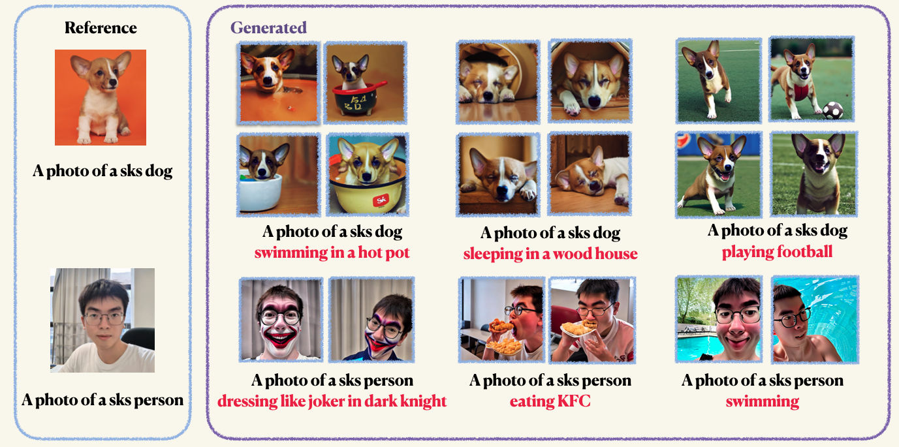

About Me
I am now a second year Ph.D candidate at SCUT, under the supervision of Prof. Lei Zhang. Currently I am having a long-term research internship at International Digital Economy Academy (IDEA). My research interests are focusd on Object Perception and Understanding. I am also dedicated to open source endeavors, which I believe is the fundamental element for the sustainable development of the AI community.
Preprint

Rex-Thinker: Grounded Object Referring via Chain-of-Thought Reasoning
Qing Jiang*,
Xingyu Chen*,
Zhaoyang Zeng,
Junzhi Yu,
Lei Zhang,
[arXiv 2025] |
[Github]

[arXiv 2025] |
[Github]
ChatRex: Tamming Multimodal LLM for Joint Perception and Understanding
Qing Jiang,
Gen Luo,
Yuqin Yang,
Yihao Chen,
Yuda Xiong,
Zhaoyang Zeng*,
Tianhe Ren*,
Lei Zhang,
[arXiv 2024] |
[Github]

[arXiv 2024] |
[Github]
DINO-X: A Unified Vision Model for Open-World Object Detection and Understanding
IDEA-CVR Team
[arXiv 2024] |
[Homepage] | [Github] | [Demo] |

Grounding DINO 1.5: Advance the "Edge" of Open-Set Object Detection
Tianhe Ren*,
Qing Jiang*,
Shilong Liu*,
Zhaoyang Zeng*,
Wenlong Liu,
Han Gao,
Hongjie Huang,
Zhengyu Ma,
Xiaoke Jiang,
Yihao Chen,
Yuda Xiong,
Hao Zhang,
Feng Li,
Peijun Tang,
Kent Yu,
Lei Zhang,
[arXiv Preprint 2024] |
[Homepage] | [Github] | [Demo]

T-Rex: Counting by Visual Prompting
Qing Jiang,
Feng Li,
Tianhe Ren,
Shilong Liu,
Zhaoyang Zeng,
Kent Yu,
Lei Zhang,
[arXiv Preprint 2024] |
[Homepage] | [Github] | [Demo]

Publications
Referring to Any Person
Qing Jiang,
Lin Wu,
Zhaoyang Zeng,
Tianhe Ren,
Yuda Xiong,
Yihao Chen,
Lei Zhang,
[ICCV 2025] |
[Github]

[ICCV 2025] |
[Github]
T-Rex2: Towards Generic Object Detection via Text-Visual Prompt Synergy
Qing Jiang,
Feng Li,
Zhaoyang Zeng,
Tianhe Ren,
Shilong Liu,
Lei Zhang.
[ECCV 2024] |
[Homepage] | [Github] | [Demo] |
Visual In-Context Prompting
Feng Li, Qing Jiang, Hao Zhang, Tianhe Ren, Shilong Liu, Xueyan Zou, Huaizhe Xu, Hongyang Li Chunyuan Li jianwei Yang Lei Zhang Jianfeng Gao
[CVPR 2024] |
[Code] |

Revisiting Scene Text Recognition: A Data Perspective
Qing Jiang, Jiapeng Wang, Dezhi Peng, Chongyu Liu, Lianwen Jin
[ICCV 2023] |
[Homepage] | [Code] | [Demo] |

Products
CountAnything: Powerful Counting APP on IOS
CountAnything is a cutting-edge counting application that leverages advanced computer vision algorithms to provide automatic counting capabilities. Whether you're in the industrial, agricultural, or aquaculture sectors, or simply have counting needs, CountAnything makes the process effortless and accurate.
Open Source
Cookbook to Craft Good Code
In this guide, we'll dive into the essentials of crafting great code. We'll go through everything from how to name things clearly and highlight tools that make coding better and easier.

MMOCR
MMOCR
OpenMMLab Text Detection, Recognition and Understanding Toolbox.

Scene Text Recognition Recommendations
Long-time maintaining project for recording latest papers, datasets, algorithms, and SOTAs for scene text recognition

OCR-SAM
Combining MMOCR with Segment Anything & Stable Diffusion. Automatically detect, recognize and segment text instances, with serval downstream tasks, e.g., Text Removal and Text Inpainting

Efficient Deep Learning
Combining MMOCR with Segment Anything & Stable Diffusion. Automatically detect, recognize and segment text instances, with serval downstream tasks, e.g., Text Removal and Text Inpainting

Text Recognition on Cross Domain Datasets
Improved Text recognition algorithms on different text domains like scene text, handwritten, document, Chinese/English


Structured Dreambooth LoRA
Structured Dreambooth LoRA
Dreambooth (LoRA) with well-organized code structure. Naive adaptation from Diffusers.

Experience
| International Digital Economy Academy (IDEA) | Research intern | 2023.06 – now |
| Shanghai AI Lab (OpenMMLab) | Intern | 2022.02 – 2022.08 |